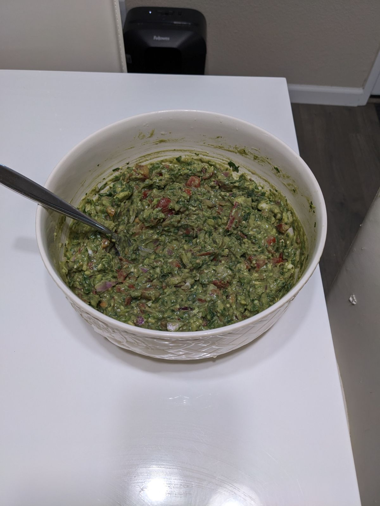

Horndog's Famous Guacamole!

Description
Are you intruding on another neighborhoods block party and need something to wow them so you
don't get kicked out? Now, I'm warning you, this recipe features quite a few serrano peppers so it might have a
bit of a kick to it! Peppers are great because you get to feel the heat of them going in and going out! Get ready
for a hot ass shit! Show those random people at the block party whose boss by bringing Horndog's famous guac!
Ingredients
- 4 Ripe avocados
- 1/2 Red onion
- 7 Roma Tomatoes
- A heap of cilantro
- 4/5 Cloves of garlic
- 4/5 Limes
- 6 Serrano peppers
Steps
- Chop red onion into fine pieces. Add to bowl.
- Finely chop cilantro. Add to bowl.
- Extract avocado from skins. Can either cube pieces of mash avocado. Add to bowl.
- Cut up limes, squeeze juice in bowl to prevent browning.
- Finely cut roma tomatoes. Get rid of “nub” ends. Add to bowl.
- Chop garlic. Add to bowl.
- Chop serrano peppers. Add to bowl.
- Season with salt and pepper to taste.
- Refrigerate for a few hours. However, this is Horndog's personal preference.